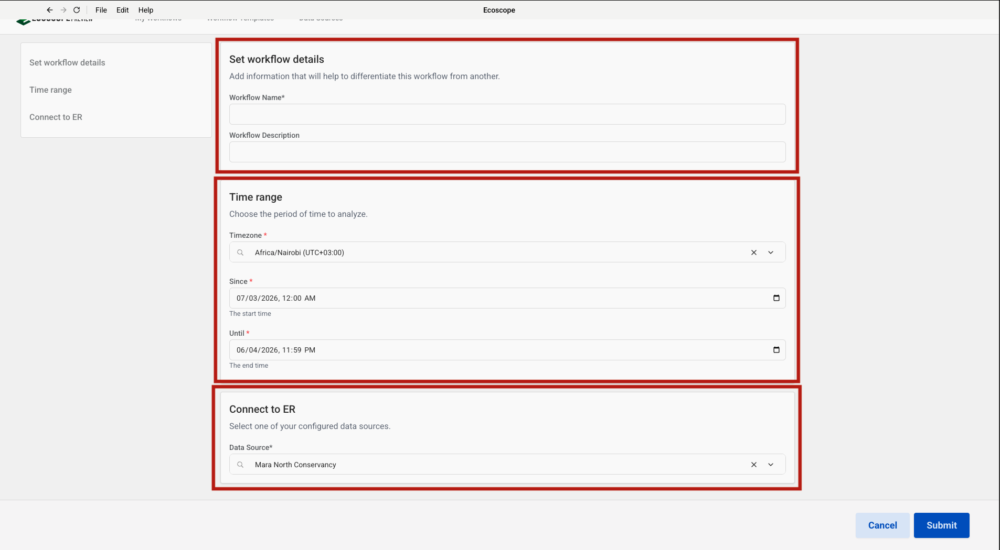

This guide walks you through configuring and running the MNC Wildlife Report workflow, which processes elephant, buffalo, rhino, lion, leopard, cheetah, giraffe, hartebeest, and wildlife incident events from EarthRanger to produce tabular CSV reports, interactive maps, and herd-size charts.
The workflow delivers, for each run:
CSV tables
Maps and charts (HTML + PNG)
Before running the workflow, ensure you have:
elephant_sighting_rep, buffalo_sighting_rep, rhino_sighting_rep, lion_sighting_rep, leopardsightingrep, cheetah_sighting_rep, giraffe_sighting, hartebeest_sighting, snare_rep, fire_rep, wildlife_injury_rep, wildlife_treatment_rep, wildlife_carcass_rep)In the Ecoscope app, navigate to the Workflow Templates tab and click Add Workflow Template (top-right). In the Github Link field that appears, paste the repository URL:
https://github.com/wildlife-dynamics/mnc_wildlife_report.gitThen click Add Template to register the template.
Navigate to Data Sources and click Connect. The Connect Ecoscope to EarthRanger dialog will open. Fill in the form:
| Field | Description |
|---|---|
| Data Source Name | A label to identify this connection (e.g. Mara North Conservancy) |
| EarthRanger URL | Your instance URL (e.g. your-site.pamdas.org) |
| EarthRanger Username | Your EarthRanger username |
| EarthRanger Password | Your EarthRanger password |
Important: Credentials entered here are not validated during setup. Any authentication errors will only appear when the workflow runs.
Click Connect to save the data source.

Go back to Workflow Templates. The newly added template appears as the mnc_wildlife_report card (showing the source repository URL). Click the card to open the workflow configuration form.
The configuration form is divided into three sections, each highlighted in the left-hand navigation panel.
Set workflow details
| Field | Description |
|---|---|
| Workflow Name | A short name to identify this run (required) |
| Workflow Description | Optional notes to differentiate this run from others (e.g. reporting month or site) |
Time range
| Field | Description |
|---|---|
| Timezone | Select the local timezone (e.g. Africa/Nairobi (UTC+03:00)) |
| Since | Start date and time — all wildlife events from this point are fetched |
| Until | End date and time of the analysis window |
Connect to ER
Select the EarthRanger data source configured in Step 2 from the Data Source dropdown (e.g. Mara North Conservancy).
Once all three sections are filled, click Submit to start the workflow.

Once submitted, the runner will:
elephant_sighting_rep events; resolve field IDs to display titles; normalise and flatten event details; retain herd composition, herd size, and demographic columns (female, male, sub-adult, under a year); replace missing herd composition with Unspecified; count unique events per day with a grand total row and save as total_elephants_events_recorded.csv; produce a herd-composition point map saved as elephant_sightings_events.html and .png; bin herd sizes into 7 intervals and produce a bar chart saved as elephant_herd_size_bar_chart.html and .png; produce a bubble map sized by herd size saved as elephant_herd_types_map.html and .png.buffalo_sighting_rep events; resolve field IDs to display titles; normalise and flatten event details; retain herd composition and herd size; replace missing herd composition with Unspecified; count unique events per day with a grand total row and save as total_buffalo_events_recorded.csv; produce a herd-composition point map saved as buffalo_sightings_events.html and .png; bin herd sizes into 7 intervals and produce a bar chart saved as buffalo_herd_size_bar_chart.html and .png; produce a bubble map sized by herd size saved as buffalo_herd_types_map.html and .png.rhino_sighting_rep events; resolve field IDs to display titles; normalise and flatten event details; count unique events per day with a grand total row and save as total_rhino_events_recorded.csv; produce a point map saved as rhino_sightings_events.html and .png.lion_sighting_rep events; resolve field IDs to display titles; normalise and flatten event details; count unique events per day with a grand total row and save as total_lion_events_recorded.csv; produce a point map saved as lion_sightings_events.html and .png.leopardsightingrep events; resolve field IDs to display titles; normalise and flatten event details; count unique events per day with a grand total row and save as total_leopard_events_recorded.csv; produce an individual identity summary grouped by individuals present and save as individual_leopard_summary.csv; produce a point map saved as leopard_sightings_events.html and .png.cheetah_sighting_rep events; resolve field IDs to display titles; normalise and flatten event details; count unique events per day with a grand total row and save as total_cheetah_events_recorded.csv; produce an individual identity summary grouped by individuals present and save as individual_cheetah_summary.csv; produce a point map saved as cheetah_sightings_events.html and .png.giraffe_sighting events; resolve field IDs to display titles; normalise and flatten event details; produce a point map saved as giraffe_sightings_events.html and .png.hartebeest_sighting events; resolve field IDs to display titles; normalise and flatten event details; produce a point map saved as hartebeest_sightings_events.html and .png.snare_rep, fire_rep, wildlife_injury_rep, wildlife_treatment_rep, and wildlife_carcass_rep events; normalise event details; rename raw field keys to human-readable column names; save the full records as wildlife_events_recorded.csv; produce a pivot summary table by incident type and save as wildlife_incidents_summary_table.csv; count unique incidents per day with a grand total row and save as wildlife_incidents_recorded_by_date.csv; produce a point map coloured by incident type saved as wildlife_incidents_map.html and .png.ECOSCOPE_WORKFLOWS_RESULTS.All outputs are written to $ECOSCOPE_WORKFLOWS_RESULTS/.
| File | Description |
|---|---|
total_elephants_events_recorded.csv |
Daily unique elephant sighting count (date, no_of_events) with a grand Total row |
total_buffalo_events_recorded.csv |
Daily unique buffalo sighting count (date, no_of_events) with a grand Total row |
total_rhino_events_recorded.csv |
Daily unique rhino sighting count (date, no_of_events) with a grand Total row |
total_lion_events_recorded.csv |
Daily unique lion sighting count (date, no_of_events) with a grand Total row |
total_leopard_events_recorded.csv |
Daily unique leopard sighting count (date, no_of_events) with a grand Total row |
individual_leopard_summary.csv |
Leopard sightings grouped by individuals present |
total_cheetah_events_recorded.csv |
Daily unique cheetah sighting count (date, no_of_events) with a grand Total row |
individual_cheetah_summary.csv |
Cheetah sightings grouped by individuals present |
wildlife_events_recorded.csv |
Raw wildlife incident records with all event fields |
wildlife_incidents_summary_table.csv |
Pivot table of incident counts by type (Fire, Snare, Wildlife carcass, Injured wildlife, Veterinary treatment) |
wildlife_incidents_recorded_by_date.csv |
Daily unique wildlife incident count (date, no_of_events) with a grand Total row |
| File | Description |
|---|---|
elephant_sightings_events.html / .png |
Elephant sighting locations coloured by herd composition |
elephant_herd_size_bar_chart.html / .png |
Bar chart of elephant herd size frequency distribution |
elephant_herd_types_map.html / .png |
Bubble map of elephant sightings; point radius proportional to herd size |
buffalo_sightings_events.html / .png |
Buffalo sighting locations coloured by herd composition |
buffalo_herd_size_bar_chart.html / .png |
Bar chart of buffalo herd size frequency distribution |
buffalo_herd_types_map.html / .png |
Bubble map of buffalo sightings; point radius proportional to herd size |
rhino_sightings_events.html / .png |
Rhino sighting locations on conservancy boundaries and parcels |
lion_sightings_events.html / .png |
Lion sighting locations on conservancy boundaries and parcels |
leopard_sightings_events.html / .png |
Leopard sighting locations on conservancy boundaries and parcels |
giraffe_sightings_events.html / .png |
Giraffe sighting locations on conservancy boundaries and parcels |
hartebeest_sightings_events.html / .png |
Hartebeest sighting locations on conservancy boundaries and parcels |
wildlife_incidents_map.html / .png |
Wildlife incident locations coloured by incident type |